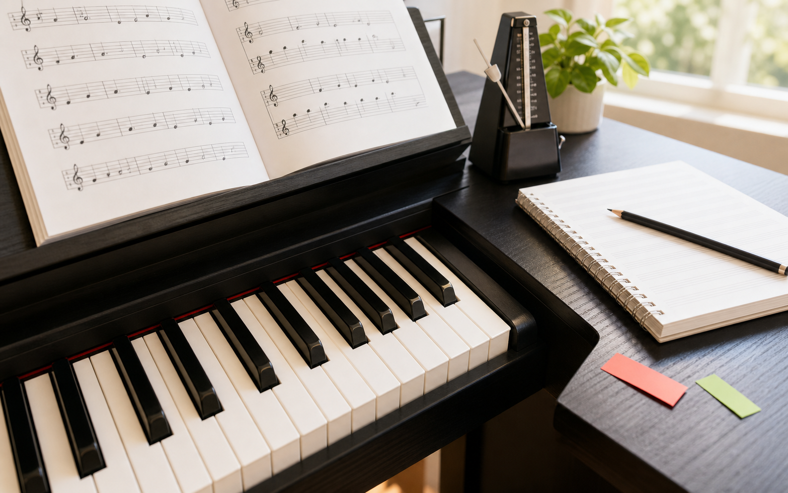

第1阶段
五线四间和键盘地图
认识谱表坐标，把纸上的线间和琴键上的位置连起来。
课堂目标
趣味玩法
课后巩固
0/20
已完成课程

把成人初学最容易卡住的读谱、节奏和双手协调用四段路线拆开。
每节课都有一个清晰主题，一个趣味任务，一段课后巩固。点选课程查看细节。
认识谱表坐标，把纸上的线间和琴键上的位置连起来。
把枯燥反复变成小任务：节拍器、识谱问答、每日清单都能在这里完成。
高音谱表第1线是什么音？
先猜一次，再看答案。
每周上1节新课，余下6天只做三件事：读谱定位、慢速弹准、录音复盘。成人学习最需要的是稳定反馈，而不是一次练到手酸。